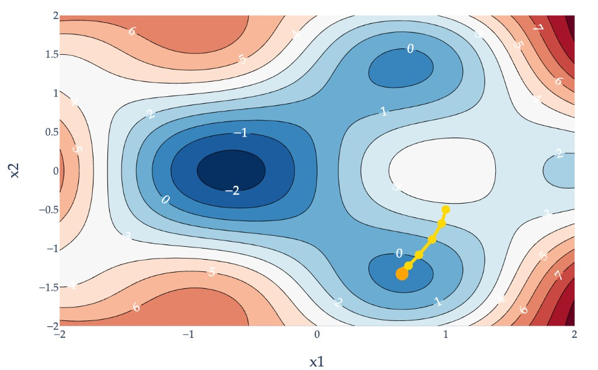
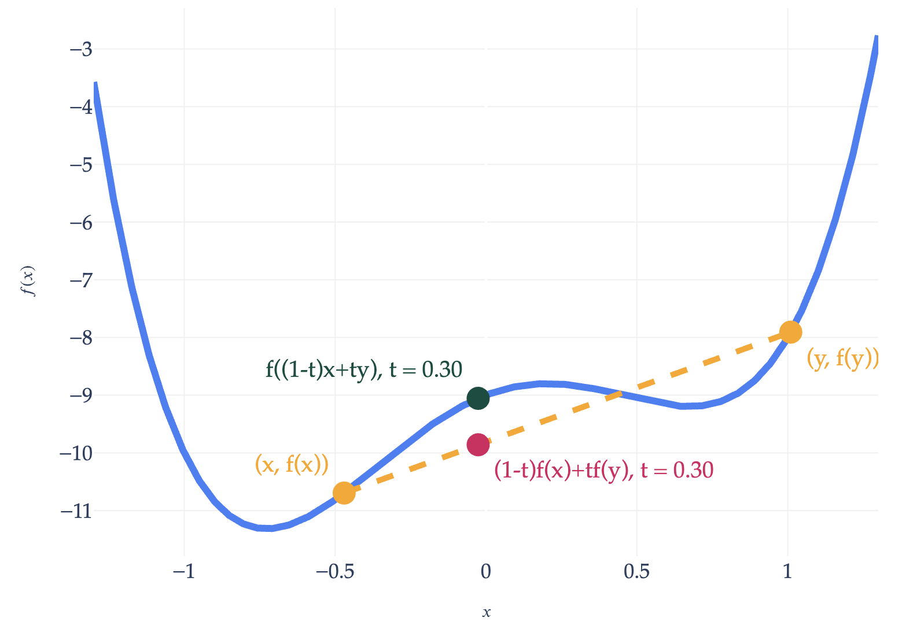
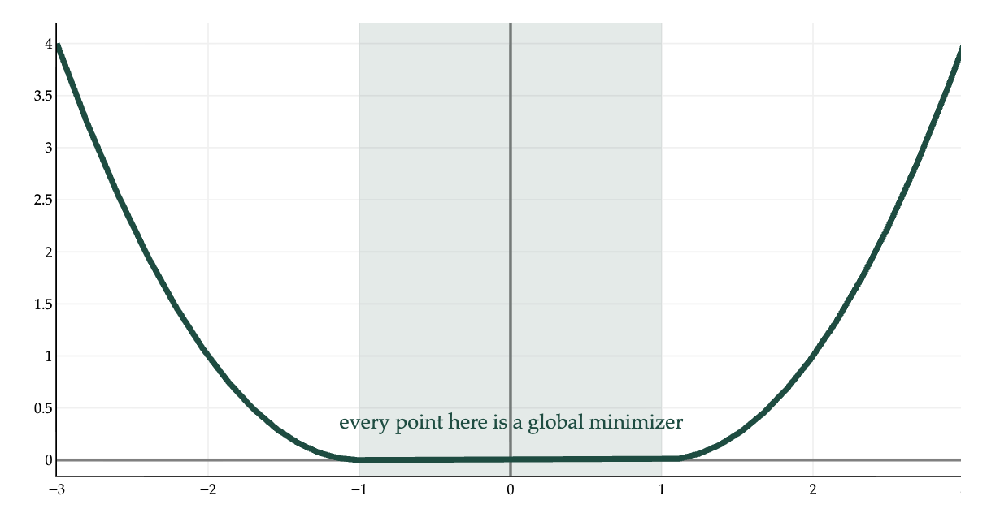

Each lab worksheet will contain several activities, some of which will involve writing code and others that will involve writing math on paper. To receive credit for a lab, you must complete as many of the activities as you can in 2 hours and submit a PDF of your work to Gradescope. We will provide specific instructions on how to submit programming activities (e.g. submitting the notebook or including a screenshot of some output).
Suppose \(f: \mathbb{R}^d \rightarrow \mathbb{R}\) is a differentiable vector-to-scalar function, meaning that all of its partial derivatives are defined everywhere. To find \(\vec x^{\ast}\), the minimizer of \(f\):
Choose a positive number, \(\mathbf{\alpha}\). This number is called the learning rate, or step size.
Choose an initial guess for the minimizer, \(\vec x^{(0)}\).
Then, repeatedly update the guess using the update rule:
Terminate once the algorithm converges, which happens when the norm of the gradient, \(\lVert \nabla f(\vec x^{(t)}) \rVert\), is below some small tolerance level, e.g. \(0.001\) (since this must mean we’re very close to a minimum).
Intuition: The gradient vector \(\nabla f(\vec x^{(t)})\) tells us the direction of greatest increase in \(f\) at the current guess \(\vec x^{(t)}\), so \(-\nabla f(\vec x^{(t)})\) is the direction that will decrease our function the most. The distance moved in that direction is determined by the step size \(\alpha\), which scales \(-\nabla f(\vec x^{(t)})\). To update our guess, we add \(-\alpha \nabla f(\vec x^{(t)})\) to the old guess, \(\vec x^{(t)}\). Then, we repeat this process.

Example gradient descent path for a function \(f: \mathbb{R}^2 \to \mathbb{R}\).
To minimize \(f(\vec x)\), we use gradient descent, with a learning rate of \(\alpha = \frac{1}{4}\).
a)
Open Desmos and plot the related function \(g(x) = x^3 + x^2\). Even though this is a scalar-to-scalar function, and \(f\) is vector-to-scalar, they are related. What do you notice about the shape of the graph?
Solution
\(g(x)\) is a cubic function, with a local minimum and local maximum and no global minimum nor maximum. It is not convex.
b)
Find \(\nabla f(\vec x)\), the gradient of \(f(\vec x)\).
Recall, \(\vec x^{(t)}\) is the guess for \(\vec x^{\ast}\) at timestep \(t\). Let \(\vec x^{(t)} = \begin{bmatrix} x_1^{(t)} \\ x_2^{(t)} \end{bmatrix}\).
The gradient descent update rule states that \(\vec x^{(t+1)}=\vec x^{(t)}-\alpha \nabla f(\vec x^{(t)})\). But, since \(\nabla f(\vec x) = \begin{bmatrix} \frac{\partial f}{\partial x_1} \\ \frac{\partial f}{\partial x_2} \end{bmatrix}\), we can think of the update rule as being two separate update rules:
Will gradient descent eventually converge, given this initial guess and learning rate?
Solution
i. Recall that \(x_2^{(t+1)} = \frac{1}{2}x_2^{(t)}\). So, \(x_2^{(1)} = \frac{1}{2}x_2^{(0)} = \frac{1}{2} \cdot 0 = 0\). As for \(x_1^{(1)}\), we have
ii. Gradient descent will not converge: the guesses for \(x_1^{(t)}\) will get larger and larger in magnitude, approaching \(-\infty\). This happens because the term \(-\frac{3}{4} (x_1^{(t)})^2\) dominates the term \(\frac{1}{2} x_1^{(t)}\) in the iteration rule. Since \(x_1^{(1)}\) is already larger than 1 in magnitude, \((x_1^{(1)})^2\) will be even larger than that (since when you square a number greater than 1, it increases in size), which propagates to the next iteration and so on.
ii. Here, gradient descent will converge, since the absolute value of \(x_1^{(1)}\) is less than 1. If we run more iterations, we’ll see that \(x_1^{(t)}\) is approacing zero because the absolute value keeps decreasing. \(x_1^{(2)}\), for instance, is \(-\frac{11}{64}\), and \(|-\frac{11}{64}| < |-\frac{1}{4}|\).
Activity 2: Gradient Descent for Empirical Risk Minimization
Suppose we have a dataset of \(3\) points, \((1, 2), (3, 5), (6, -1)\). We’d like to fit a simple linear regression model, \(h(x_i) = w_0 + w_1 x_i\), to this dataset by minimizing average squared loss.
While we already know a closed-form solution for the optimal parameters — we’ve seen multiple equivalent versions of these formulas throughout the semester — let’s use gradient descent to find them.
Let \(\vec w = \begin{bmatrix} w_0 \\ w_1 \end{bmatrix}\). Using an initial guess of \(\vec w^{(0)} = \begin{bmatrix} 0 \\ 0 \end{bmatrix}\) and a step size of \(\alpha = 0.1\), perform one iteration of gradient descent. What is \(\vec w^{(1)}\)?
Hint: You can proceed either by using the gradient of \(R_\text{sq}(\vec w) = \frac{1}{n} \lVert \vec y - X \vec w \rVert^2\) from the notes or by computing the partial derivatives of \(R_\text{sq}(w_0, w_1) = \frac{1}{n} \sum_{i=1}^n (y_i - (w_0 + w_1 x_i))^2\) with respect to \(w_0\) and \(w_1\).
Solution
Let’s use the gradient of \(R_\text{sq}(\vec w) = \frac{1}{n} \lVert \vec y - X \vec w \rVert^2\) from the notes.
Note that if you did this using the partial derivatives of \(R_\text{sq}(w_0, w_1) = \frac{1}{n} \sum_{i=1}^n (y_i - (w_0 + w_1 x_i))^2\) with respect to \(w_0\) and \(w_1\), you would get the same answer!
A function \(f: \mathbb{R}^d \to \mathbb{R}\) is convex if for all \(\vec x\) and \(\vec y\) in its domain, and for any \(t \in [0, 1]\),
$$ f((1-t) \vec x + t \vec y) \leq (1-t) f(\vec x) + t f(\vec y) $$
The English interpretation of this definition is that the line connecting any two points on the graph of \(f\) always lies on or above the graph of \(f\). Intuitively, a convex function is a function that curves upward, like a bowl.

A non-convex function.
a)
If a function is convex, it must have a global minimum.
True False
Solution
True False
This is false. For example, \(f(x) = e^x\) is convex, but it doesn’t have a global minimum. It approaches \(0\) as \(x \to -\infty\), but it never actually reaches it. \(f(x) = x\) is also convex and doesn’t have a global minimum.
b)
If a function is convex, then gradient descent must converge on it given any initial guess and step size.
True False
Solution
True False
This is also false. If we choose a step size \(\alpha\) that is too large, gradient descent may oscillate or diverge, as we’ve seen in examples in Chapter 8.3.
c)
If a function is convex, then any local minimum is also a global minimum.
If a function is convex and has a global minimum, then its minimizer must be unique.
True False
Solution
True False
This is false: a function can have multiple local minima that are all adjacent to each other, like a flat “ridge” at the very bottom.

Activity 4: Linear Approximation
Suppose \(f: \mathbb{R} \to \mathbb{R}\), i.e. \(f\) is a scalar-to-scalar function. In general, the tangent line to \(f(x)\) at \(x=a\) is given by the equation
The \(\approx\) symbol means that the tangent line is an approximation of \(f(x)\) near \(x = a\); in Appendix 2, we defined it as the best linear approximation of \(f(x)\) near \(x = a\). The expression on the right is a line with slope \(\frac{\text{d} f}{\text{d} x}(a)\) that passes through the point \((a, f(a))\).
a)
Draw \(f(x) = (x - 2)^2 + 5\) and its tangent line at \(x = 3\).
Solution
First, let’s find the derivative of \(f(x) = (x - 2)^2 + 5\).
$$ \frac{\text{d} f}{\text{d} x} = 2(x - 2) $$
So, the tangent line to \(f(x)\) at \(x = 3\) is given by
The last two boxed expressions are both equivalent ways of writing the tangent plane. This plane passes through \((2, 5, f(2, 5))\) while having the same gradient as \(f(\vec x)\) at that point.
Plugging in \(x_1 = 2\) and \(x_2 = 5\) into the final expression gives 26, which also matches the value of \(f\left( \begin{bmatrix} 2 \\ 5 \end{bmatrix} \right) = 26\).
In the latter form, the coefficients on \(x_1\) and \(x_2\) are 4 and 10, respectively, which match the components of the gradient vector \(\nabla f\left(\begin{bmatrix} 2 \\ 5 \end{bmatrix}\right) = \begin{bmatrix} 4 \\ 10 \end{bmatrix}\).
So, the boxed plane is the tangent plane to \(f(\vec x)\) at \(\vec x = \begin{bmatrix} 2 \\ 5 \end{bmatrix}\). It’s the best linear approximation of \(f(\vec x)\) near that point.
Activity 5: Using Convexity to Prove Inequalities
Proofs like this will not appear on Midterm 2 but will appear on the Final Exam.
a)
Suppose \(f: \mathbb{R} \to \mathbb{R}\) is a convex function such that \(f(0) = 0\). Prove that for all \(y \in \mathbb{R}\) and \(t \in [0, 1]\),
$$ f(ty) \leq t f(y) $$
Solution
Since the definition of convexity states that
$$ f((1-t) x + t y) \leq (1-t) f(x) + t f(y) $$
for all\(x, y \in \mathbb{R}\), we can substitute whatever we’d like for \(x\) or \(y\). Let’s plug in \(x = 0\). Then,